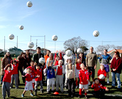

|
"Football Fun in the Sun."
What better way for your kids to spend their time this summer?

All 4-14 year olds are welcome to join our age-specific summer soccer camps at Miyashita Koen Futsal Courts or another location in Tokyo(TBC) and YC&AC in Yokohama. Let our English FA qualified, all-British coaches enthral, entertain and educate your young ones with their wealth of knowledge and lively, energetic characters. We encourage participants to enrol for the full 5 -action-packed-days of football games and fun, but do accept players on a per-day basis. Those that attend the full course will be rewarded with a Ceremony of Achievement on the final day at which official BFA Camp T-shirts and certificates will be presented - so parents make sure you have your cameras at the ready!!
Dates & Venues:
TOKYO - TO BE CONFIRMED
We plan to have 1 or 2 BFA Summer Soccer Camps in Tokyo, to be held at Miyashita Koen Futsal (MAP) in Shibuya or another location (TBC):
- July 22nd (Mon) - July 26th (Fri) 5-day camp @ (TBC)
- August 19th (Mon) - 23rd (Fri) 5-day camp @ (TBC)
Courses & Prices per day - (sign-up here):
- Bulldogs (age 4, 5 & 6): 10:00 am ~ 11:20 am (80 mins) BFA Members: ¥3,000 Non BFA Members: ¥4,000
- Lions (age 7 & 8): 10:00 am ~ 12:00 pm (2 hrs) BFA Members: ¥4,000 Non BFA Members: ¥5,000
- Academy (age 9 & 10): 1:30 pm ~ 4:30 pm (3 hrs) BFA Members: ¥6,000 Non BFA Members: ¥7,000
- Academy Stars (age 11 ~ 14): 1:30 pm ~ 4:30 pm (3 hrs) BFA Members: ¥6,000 Non BFA Members: ¥7,000
YOKOHAMA - CONFIRMED
The other BFA Summer Soccer Camp will be held at the Yokohama Country & Athletic Club, (MAP) Yamate, Yokohama, on August 12th, 13th, 14th, 15th & 16th - 5 day course
Courses & Prices per day (sign-up here):
- Bulldogs (age 4,5 & 6): 10:40 am ~ 12:00 pm (80 mins) BFA Members: ¥3,000 Non BFA Members: ¥4,000
- Lions (age 7 & 8): 10:00 am ~ 12:00 pm (2 hrs) BFA Members: ¥4,000 Non BFA Members: ¥5,000
- Academy (age 9 & 10): 1:00 pm ~ 4:00 pm (3 hrs) BFA Members: ¥6,000 Non BFA Members: ¥7,000
- Academy Stars (age 11 ~ 14): 1:00 pm ~ 4:00 pm (3 hrs) BFA Members: ¥6,000 Non BFA Members: ¥7,000
Important information for participants:
- Please have your child wear something comfortable to play football.
- Suitable shoes: @ Miyashita Koen, @ YC&AC molded studs (trainers for Bulldogs & Lions age)
- Shin pads are mandatory
- In case of heavy rain: @ Miyashita Koen - sessions will be cancelled. @YC&AC - sessions will be held in the gym (please prepare a pair of indoor trainers)
- Please bring lots of water/sports drink.
ALL STUDENTS SIGNING UP FOR THE FULL 5 DAY COURSE WILL RECEIVE A FREE, OFFICIAL BRITISH FOOTBALL ACADEMY T-SHIRT AND MUCH COVETED ACADEMY CERTIFICATE OF ACHIEVEMENT.
REGISTER ON-LINE HERE & GUARANTEE YOUR CHILD'S PLACE. Alternatively you can register at one of our regular locations or by CONTACTING US.
Payment method: Please make all payments by bank transfer (furikomi) to:
Bank Name: Bank of Tokyo Mitsubishi-UFJ
Branch: Shibuya Branch (135)
Account Type: Regular account #3648175
Account Name: 'Footy Japan K.K.'
Cancellation Policy: for late cancellations the following fees will apply: the day prior to the starting date booked = 100%; between1~3 days prior to the starting date booked = 50%
|
|